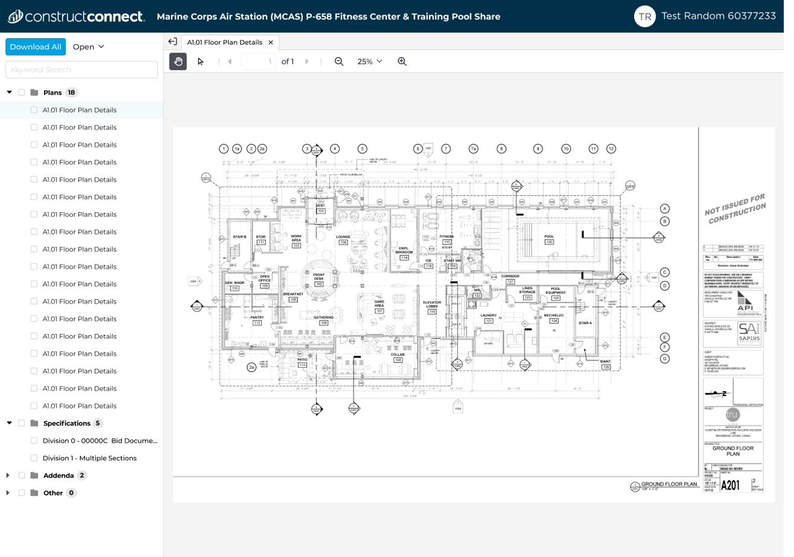
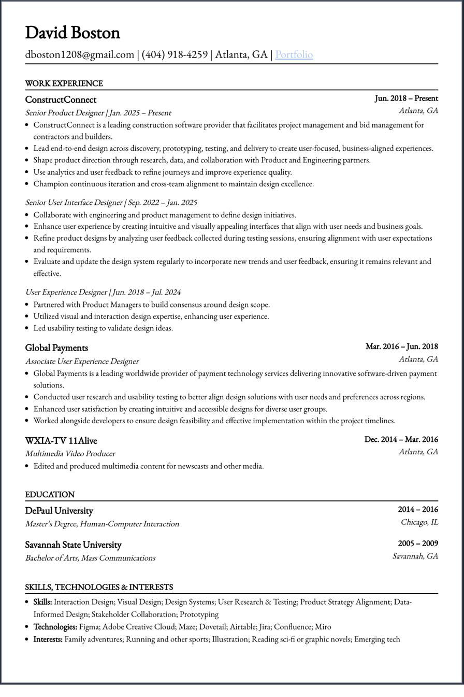
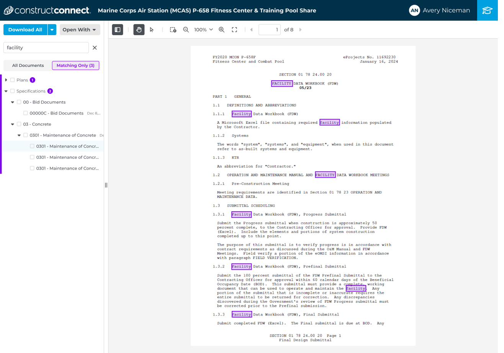

Not squad-assigned during this project. UX and UI both worked as floaters across multiple concurrent projects and apps. I paired with a UX design partner who led discovery and journey mapping, while I owned interaction and visual design across the download and search experiences through multiple rounds of user testing.
Phase 1 (View & Download) shipped October 2024, with all target metrics hit. Phase 2 (Search Within Viewer) and Phase 3 (sharing, takeoff integration) followed.
Customers wanted to qualify projects faster. The existing document viewer worked against that goal at nearly every step: large documents sometimes took minutes to load, scrolling and zooming were clunky, there was no multi-page PDF export, and the document tree only went two digits deep on CSI codes, forcing users to download an entire division to find one spec.
Users had built workarounds instead of reporting the problem as broken. Some downloaded from CCPI and re-uploaded into Bluebeam just to annotate. Others downloaded to a phone, then uploaded to SharePoint, because the desktop viewer was too unreliable to trust. In VOC interviews, multiple users independently described the experience as chaotic and unorganized.
The trigger to rebuild was infrastructure: a move to Elastic Search exposed use cases, like NOT/NEAR/AND keyword operators, the old viewer couldn't support. But the opportunity was bigger than a technical migration.
The document viewer wasn't a standalone feature. It was the connecting app between the qualification workflow and the estimation workflow, and the surface Building Product Manufacturer accounts would need before they could migrate off the legacy platform onto CCPI. Fixing it had leverage across two initiatives, not one.
Paired with a UX design partner who led discovery interviews and journey mapping. I owned interaction and visual design end to end across the search and download experiences, running multiple rounds of user testing on both.
Design went through four rounds of search-design iteration and two rounds of download-experience iteration, documented in the PM-1534 phase-review deck.
TBD — pull the round-by-round narrative and shell-layout composite from the phase-review deck.
Download component spec — states covered across two rounds of iteration on the download experience.
Tab layout won testing, but didn't ship
Three layout directions were tested, including a tab layout, which won. It wasn't implemented; the shipped version was a single-document view, cut before ship due to technical feasibility constraints given the build timeline. Everything else validated in testing shipped intact.
Purple over yellow: an accessibility fix nobody asked for
Testing early let the team nail down the overall design as well as the keyword-highlight accessibility problem before shipping something that would draw complaints, or worse, go unused. Users had complained about the previous document viewer's yellow-on-white keyword highlighting for a long time. It's incredibly hard to see for people without any visual disabilities, let alone people with them.
Several web-accessible color combinations were tested with users who had typical color vision as well as users with color vision deficiencies. Purple won. The reaction, internally and externally, exceeded expectations for what looked like a minor detail from the outside.

The shipped purple highlight. need before/after against the original yellow highlight

Search within the viewer — toggling between all documents and matching-only results, with per-document match counts.
Phase 1 shipped October 2024. All three target metrics were hit.
What worked: Early testing caught the highlight-color problem before ship, avoiding a repeat of years of user complaints about the old viewer.
What I'd do differently: Push harder for research-validated features to ship as designed, like the tab layout, or secure a committed fast-follow rather than an open-ended "later" that risks never happening.
What this unlocked: A credible surface for Building Product Manufacturer accounts, the foundation for the Ask Documents AI panel, and the migration effort off the legacy platform.